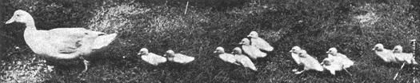

The Muscovy is a good big duck, the mature drake weighing 10 pounds and the duck 7 pounds, and they are a very hardy, self-reliant breed. The Indian Runners weigh only 4 to 4 1/2 pounds at maturity. One important advantage of the Muscovy is that it is quackless and won't bother your neighbors. Muscovies are fliers, though, and if your fencing isn't pretty high, you may have to clip the outermost feathers from one wing.